프롤로그

도스크볼에는 해가 뜨지 않는다. 번개 방벽 너머는 죽음의 땅이고, 방벽 안쪽에서는 산 자와 죽은 자가 한 도시를 나눠 쓴다. 그 도시의 어느 구석, 먼지 앉은 진열장 안에 가품과 진품이 뒤섞여 잠들어 있는 망해가는 골동품 상점이 하나 있었다. 이 이야기는 그 가게 뒷방에서 시작된다.
이것은 사랑에 관한 이야기다. 누군가를 사랑했고, 그 사랑을 잃어버린 상실감으로 움직인 사람들의 이야기. 아들을 잃은 용병단장이 있었고, 여동생을 잃은 검사가 있었고, 사랑하는 이를 위해 무슨 짓이든 저지른 부인이 있었다. 그리고 그 한복판을, 사랑 같은 것과는 별로 상관없어 보이는 사기꾼과 광신도와 폭탄광과 유령사 넷이 저벅저벅 가로질러 갔다.
0화 “너무.. 힘들어”
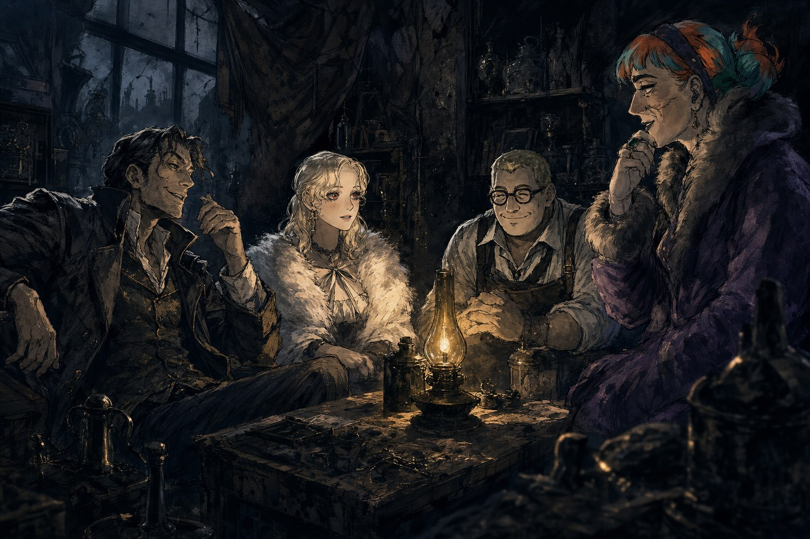
글래스 로드 옆, 오래 전부터 발길이 끊긴 골동품 매장 하나가 있었다. 주인은 코릴 그라인, 다들 종알이라 불렀다. 도박장을 전전하며 자란 그는 입을 놀릴수록 상대에게서 더 많은 것을 빼앗아 올 수 있다는 걸 일찌감치 깨우친 사기꾼이었다. 한때 램프검댕에 사기를 쳤다가 들통나 바즈소 바즈의 눈을 피해 몇 년을 숨어 지내야 했고, 다시 사업을 재개했을 때는 예전 같은 배짱이 좀처럼 나오지 않았다. 매장은 주워온 잡동사니가 쌓이는 창고로 전락했고 손님의 발길은 끊긴 지 오래였다. 그런데 최근, 이 허름한 가게에 어울리지 않을 사람들이 하나둘 드나들기 시작했다.
먼저 찾아온 건 목수 행세를 하는 사내였다. 브라이트스톤에서 새벽마다 작업실 문을 나서는 이 마흔줄의 사내는 사람 좋은 얼굴 뒤에, 폭탄으로 사람 죽이는 것을 낙으로 삼는 스파크 장인 페스타를 숨기고 있었다. 가족도 벗도 없이 재료를 구하거나 사람을 죽이러 갈 때만 작업실을 나서던 그가 이번엔 다른 용건으로 문턱을 넘었다. 폭탄 재료의 중간 마진을 없애줄 도매상을 찾던 참이었고, 종알이는 원하는 거래선을 터주는 대신 큰 건수 하나에 손을 얹어달라 제안했다.
사교 파티의 소음 속에서 종알이의 허풍을 알아챈 건 시스터. S였다. 스물여덟에 제국과학학부 교수 자리에 오르고 나리아 수녀 교단에서 가장 열심히 봉사하는 신도로 이름난 아를린 아란, 사람들은 그를 인품까지 갖춘 천재라 불렀다. 그날 밤 노리던 먹잇감을 종알이가 가로챈 걸 알아챈 S는 불쾌감을 안고 그의 뒤를 밟았다. 그렇게 찾아낸 것은 낡은 골동품점과, 예상을 뛰어넘는 언변이었다. “여기 있었군요? 재미있는 일을 하고 있네요.” 아까운 인재라 치켜세우며 자기 사람이 되라 던진 말에, 종알이는 순순히 고개를 숙이는 대신 되레 제안을 뒤집었다. 큰 건수가 있으니 함께 하자는 말, 임무를 마치면 자신이 S의 사람이 되어주겠다는 조건이었다.
그리고 오래전부터 이 가게의 단골이었던 노파가 있었다. 190cm의 거구에 낡은 털코트를 여미며 늘 추위에 떠는 헬레나 그란델, 유령사 플라이였다. 스코블란 출신이면서 아코로스에 정보를 팔아넘긴 배신자였고, 악마 세타라와 거래를 트고 원한 서린 유령 나이릭스를 곁에 묶어둔 채 살고 있었다. 가품과 진품을 가릴 줄 몰라 매번 종알이에게 속아 넘어가면서도 그때마다 흡족해하던 그였지만, 이번엔 종알이 쪽에서 먼저 손을 내밀었다. 더 좋은 물건을 원한다면 함께 일하자는 말에, 플라이는 못 들은 척 딴청 부리는 버릇 대신 순순히 고개를 끄덕였다.
사기꾼과 살인마, 신도와 배신자. 어울릴 구석이라곤 없는 넷이 망해가는 골동품점 뒷방에 모여 앉았다. 아직 이름조차 정하지 못한 무리였다. 그 밤, 낡은 진열장 사이로 스며든 도스크볼의 어둠은 이 위태로운 동거가 앞으로 어떤 꼴이 될지 아직 아무것도 알려주지 않았다.
1화 “내일을 보려는 사람만이 오늘을 얻는 거죠.”
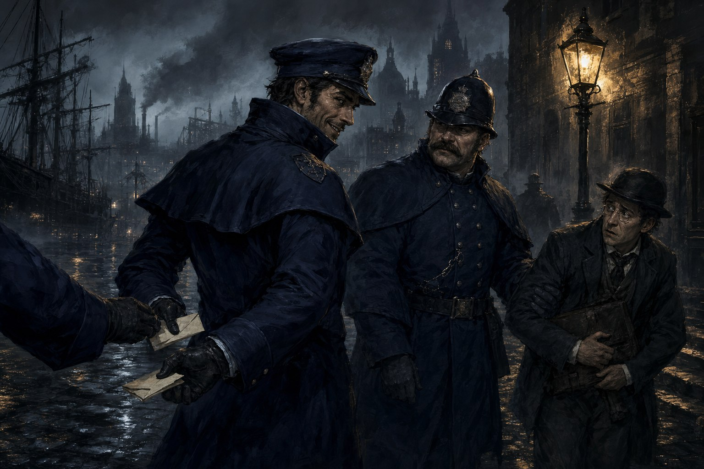
은못용병단의 소굴에서 첫 접선이 이루어졌다. 대장 세레시는 여유로운 태도로 무뢰한들을 맞았고, 곁을 지키는 투한은 한마디 없이 팔짱을 낀 채 크루를 훑어보았다. 아직 앳된 티가 가시지 않은 클루도 그 자리에 있었다. 의뢰는 간단했다. 서기 하나를 호송하는 푸른코트를 가로채고, 넘겨질 문서를 손에 넣을 것.
종알이가 먼저 움직였다. 훔친 푸른코트 제복을 걸치고 나선 그는 서기를 호송하던 진짜 푸른코트에게 태연히 다가가 말을 붙였다. 같은 편조차 순간 헷갈릴 만큼 능청스러운 수작이었다. 정신을 딴 데 팔게 만든 틈에, 넘겨야 할 문서는 어느새 종알이의 품 안에서 다른 종이로 뒤바뀌어 있었다.
그 사이 불꽃고리회가 쥐고 있던 정체불명의 원석 덩어리를 두고 클루와 시스터.S, 페스타 사이에 실랑이가 붙었다. 결론이 나기도 전에 클루는 돌을 낼름 챙겨 사라졌다. 그 무리 곁을 스치듯 지나간 로완장로와, 그림자처럼 붙어 있던 청년 지도사를 지켜보던 시스터.S는 저들이 육신의 희열 교회 사람들이라는 것을 문득 알아챘다. 오래전 부모가 몸담았던 그 신앙이 이런 자리에서 다시 튀어나올 줄은 몰랐다.
페스타는 바람총을 들어 푸른코트 하나를 조용히 처리하려 했지만 화살은 빗나갔고, 발목이 접질렸다. 정작 그는 실패의 무안함보다 어째서 빗나갔는지를 골똘히 분석하며 여전히 상대의 목덜미만 노려보고 있었다. 쓰러진 푸른코트에게 폭탄을 마저 설치하려 들자 시스터.S가 단검을 뽑아 들며 막아섰다. 손목을 자르겠다는 말까지 나온 팽팽한 대치 끝에, 둘 사이의 신경전은 크루 안에 앙금으로 남았다.
일을 마치고 돌아간 자리에서, 세레시는 어딘가 다친 채로 그들을 맞았다. 등급 III에 오른 용병단의 두목이 대체 무엇과 부딪혔기에 저 지경이 됐는지, 그녀 스스로는 입을 열지 않았다. 시스터.S는 그런 그녀를 붙잡고 진심을 다해 설득에 나섰다. 인맥을 넓히려는 계산이었을지언정, 그 말에는 어느새 걱정이 섞여 있었다.
그 밖에도 뒤숭숭한 여운이 남았다. 한때 반전을 거듭했던 스트랭포드는 이번엔 궁지에 몰린 낯빛이었다. 일이 마무리될 즈음에는 화이트크라운 깊숙한 곳에 처박혀 있어야 할 귀족 하나가 불쑥 모습을 드러냈다. 그리고 그날의 끝에는 페스타 앞에 낯선 사내가 나타났다. 25년 가까이 소식 한 번 없던 형이었다. 세월에 마모된 얼굴을 하고도 단번에 동생을 알아본 그가 태연하게 말을 걸었다. “동생아.” 페스타는 겉으로 아무렇지 않은 척했지만, 그 한마디가 얹힌 자리는 오래도록 서늘했다.
1.5화 “조직 설정”
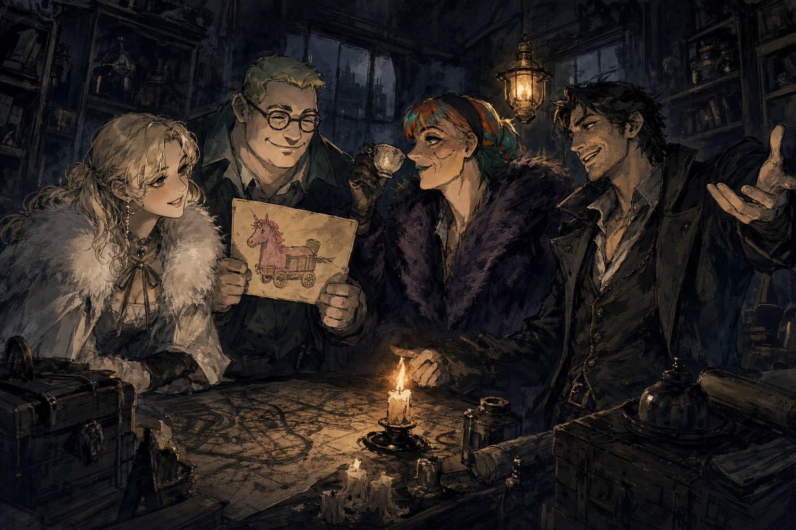
하천이 흘러드는 자리에 낡은 골동품 상점 하나가 서 있었다. 장사를 하는 것인지 접은 것인지 알 수 없을 만큼 먼지가 켜켜이 앉은 진열장, 누구도 값을 매겨보지 않은 잡동사니들이 선반마다 위태롭게 쌓여 있었다. 원래는 종알이가 제 몫으로 챙기려던 건물이었으나, 부동산 사기에 제대로 걸려 껍데기만 남은 것이 이 가게였다. 그럼에도 종알이는 그 자리를 버리지 않았다. 망해가는 상점의 뒷방과 지하는, 머지않아 도스크볼의 뒷골목에서 낯선 이름으로 불리게 될 조직의 소굴이 되었다.
사람을 모은 것도 종알이였다. 가품을 진품인 양 속여 팔던 손버릇이 낳은 첫 인연이 플라이였다. 예술에 관심은 많으나 조예는 얕았던 그녀는 종알이의 골동품에 제대로 넘어갔고, 속은 자리에서 오히려 발을 들이게 되었다. 시스터.S는 종교기관 안에서 손에 넣은 건물 도면 뭉치를 챙겨 왔고, 페스타는 폭탄 하나면 못 여는 문이 없다는 확신을 품고 합류했다. 형이 있다는 소문만 무성할 뿐, 정작 그 형의 얼굴은 아직 누구도 보지 못한 채였다.
넷이 모이자 이 무리를 무엇이라 부를지가 문제였다. 한동안은 자객단이 어울리지 않겠냐는 말이 오갔으나, 결국 자리를 잡은 것은 밀수단이었다. 값나가는 물건이든 남의 눈을 피해야 하는 사람이든, 어둠 속에서 옮기는 일이라면 이 넷의 손을 거치지 않을 이유가 없었다. 그렇게 이름 붙은 조직이 황혼의 전달자였고, 도스크볼의 뒷세계에는 이내 이들에 대해 “괴상함”이라는 평판이 따라붙기 시작했다.
조직의 자리를 잡는 과정에서 인연도 함께 그어졌다. 무정부주의자들과는 손을 잡을 여지를 남겼고, 푸른코트에게는 처음부터 곱지 않은 시선이 향했다. 은못용병단에게서 받은 보수가 이 조직의 첫 밑천이 되었으나, 종알이의 손에 들어간 돈이 어디로 흘러갈지는 아무도 장담할 수 없었다.
가게의 뒷방에 하나둘 짐을 풀어놓으며, 넷은 서로의 얼굴을 마주 보았다. 아직은 아무것도 증명되지 않은, 갓 이름을 얻은 무리였다. 다만 페스타가 계단에서 우연히 마주쳤다는 그 형의 그림자만이, 다음 발걸음을 재촉하듯 어둠 속에 조용히 드리워져 있었다.
2화 “이게 껍데기인가 뭔가 하는 그거야?”
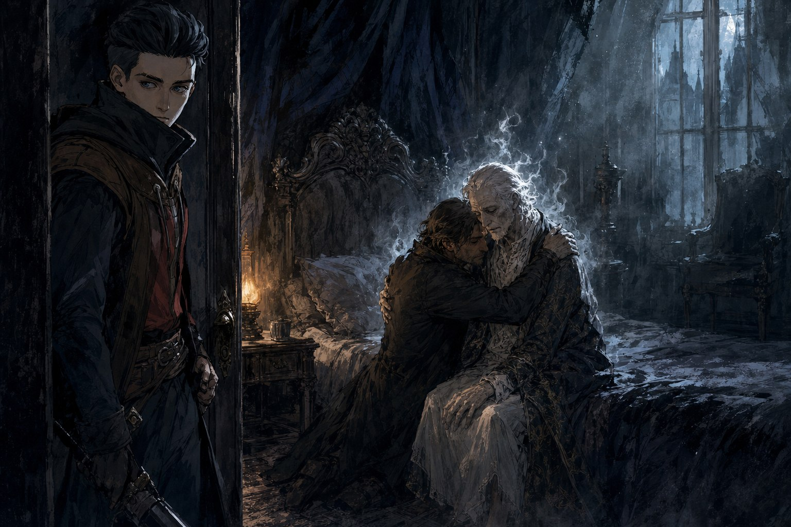
세레시의 자리에는 술 냄새가 짙게 배어 있었다. 종알이와 시스터.S, 페스타, 플라이가 탁자에 둘러앉자 세레시는 익숙하게 잔을 돌렸다. 다들 독한 것을 시키는 와중에 페스타만 짧게 내뱉었다. “우유.” 아무도 그것을 말리지 않았다. 탁자 한편에는 세레시가 읽던 도스크볼 에코즈 신문이 놓여 있었다. 헤드라인은 감령관 실종사건이었다. 시스터.S는 세레시가 다른 손님과 나누는 말을 놓치지 않으려 문에 몸을 바짝 붙였다가, 문이 예상과 다르게 열리는 바람에 볼썽사납게 나뒹굴며 엿듣던 것을 들키고 말았다.
자리가 무르익기도 전에 문이 열리며 타오스가 들어섰다. 페스타의 형이었다. 세레시의 또 다른 의뢰인이기도 한 그는 동생을 보자마자 얼굴을 굳히며 살인마 동생이라고 쏘아붙였다. 페스타는 대꾸 대신 몸으로 답했고, 둘은 순식간에 엉겨 붙어 몸싸움을 벌였다. 숨을 몰아쉬며 페스타가 내뱉은 말은 하나였다. “나는 가족이 없다.” 타오스는 그 말을 비웃듯 흘려들었지만, 자리를 뜨고도 페스타는 몇 번이나 그를 마주쳤던 입구 쪽을 돌아보았다. 세레시는 그 소란을 능청스럽게 받아넘기며, 은못용병단이 타오스의 의뢰를 맡고 있으며 타오스가 스트랭포드 공과도 줄이 닿아 있다는 이야기를 흘렸다.
일은 펜데린 공의 저택에서 벌어지고 있었다. 대저택의 정문은 굳게 닫혀 있었지만, 간병인 클라라가 가족들의 눈을 피해 뒷문으로 일행을 들여보내주었다. 온 집안이 무언가를 숨기려는 듯 조용했다. 복도를 헤매던 종알이와 페스타, 클루는 엉뚱하게도 화장실 앞에 나란히 모여 서게 되었고, 클루가 심각한 얼굴로 중얼거렸다. “여긴… 화장실이야.” 안쪽으로 더 들어서자 호화로운 문 앞을 지키는 집사의 유령이 나타나 알쏭달쏭한 말장난 수수께끼를 던졌다. 종알이가 답을 맞히자 문은 순순히 열렸다.
펜데린 공은 침실에 앉아 초점 없는 눈으로 알아들을 수 없는 말을 웅얼거리고 있었다. 다른 이들이 주춤하는 사이 종알이는 망설임 없이 다가가 그를 꼭 끌어안았다. 누구도 예상 못한 행동이었으나 이상하리만치 그 자리에 꼭 맞았다. 그 틈에 플라이가 유령장을 살폈다. 펜데린의 메아리와 영은 이미 옅게 바래 있었다. 유령면역자와는 다른 증상, 껍데기의 징후였다. 방 곳곳에서 찾아낸 의문의 쪽지와 펜데린의 진짜 이름을 캐내는 과정에서, 일행은 육신의 희열 교회의 교리가 껍데기의 증상과 소름 끼치도록 겹친다는 것을 알아냈다. 그러나 정작 두 눈으로 확인한 흔적은 불꽃고리회의 것이었다.
종알이가 그 이름을 입 밖에 낸 순간, 곁을 지키던 경호원 하나가 누군가에게 조종당하듯 눈빛을 잃더니 단검을 뽑아 던졌다. 종알이는 반사적으로 손을 뻗어 그 칼날을 맨손으로 받아냈다. 그것으로 저택은 순식간에 전장이 되었다. 페스타가 폭탄을 터뜨리자 시스터.S는 그 위력을 오판한 채 펜데린 대부인을 끌어안고 함께 높은 곳에서 뛰어내렸다. 부인을 지키려던 몸짓이었지만 낙하의 충격은 고스란히 그녀의 등을 갈랐다. 척추에 금이 가는 소리와 함께 시스터.S는 바닥에 널브러졌다.
경호원은 끝내 한마디도 남기지 못하고 쓰러졌다. 불꽃고리회의 첩자일 거라는 짐작과 달리, 그는 그저 오래전 종알이와 얽힌 악연을 지닌 자에 지나지 않았다. 소란이 가라앉은 뒤 클루가 낮게 속삭였다. 펜데린을 껍데기로 만든 배후로 지목되던 로완 장로 역시, 이미 껍데기가 되어버린 것은 아니겠느냐고.
일행은 쪽지와 단서를 한 아름 안고 저택을 빠져나왔다. 불꽃고리회, 육신의 희열 교회, 사라진 감령관, 그리고 이미 껍데기가 되었을지 모르는 장로까지. 실마리는 늘어났지만 무엇 하나 뚜렷해지지 않았다. 그날 밤 저택 안에서 있었던 일은, 누군가는 그 자리에서 살아남았고 누군가는 그러지 못했다는 사실만을 남겼다.
3화 “오늘 내일 하는 사람에게 치즈는 없다”
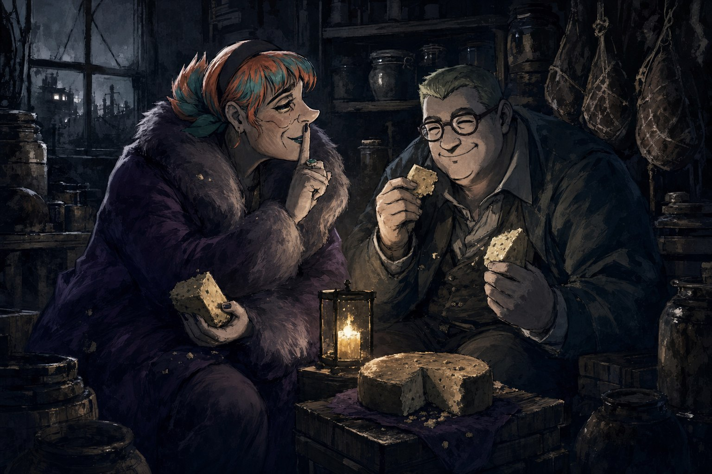
첫 영토를 잡는 일은 생각보다 간단하지 않았다. 시즌2 시절부터 낯이 익은 옛 인연들이 자라난 모습으로 나타나 황혼의 전달자를 거들었고, 협상은 금전 몇 닢을 두고 오가는 실랑이로 시작됐다. 퉁실해진 빠른손이 4금전에 물러서겠다고 했을 때 순순히 받아들였어야 했을지, 아니면 칩스가 부른 1금전이 더 정직한 값이었을지 아무도 확신하지 못하는 사이 협상은 이미 산으로 가고 있었다. 그리고 안개사냥꾼파가 끼어들면서 교섭은 완전히 결렬됐다. 시스터.S가 앞에 서서 적의 시선을 몸으로 받아내는 동안 종알이도 나란히 버텨섰고, 페스타는 눈을 빛내며 “기회만 되면 터트린다! 다 터트려버린다!”고 외쳤다. 플라이는 유령의 힘을 쥐어짜내다 스스로도 위태로워졌지만, 그때마다 종알이와 시스터.S가 번갈아 몸을 던져 대신 맞았다. 그렇게 첫 땅은, 협상이 아니라 주먹과 화약으로 얻어졌다.
육신의 희열 교회에 신도로 등록하러 간 것은 그다음이었다. 종알이는 시스터.S와 동행해 문지기 앞에 섰고, 이름을 대라는 말에 순간 말문이 막혀 자신의 본명 “코릴 그라인”을 내밀었다. 시스터.S가 옆에서 능란한 말솜씨로 문지기를 흘리며 대화를 이어갔고, 그 틈에 껍데기 의식을 치를 자격 조건과 “유령면역자”라는 낯선 단어를 캐낼 수 있었다. 신도로 등록되어 있을 것, 그리고 대예배에 최소 한 번은 참석했을 것. 교회가 무엇을 원하는지 알아내는 데는 그것으로 충분한 시작이었다.
그러나 오래 머물 수는 없었다. 신도 하나가 시스터.S의 얼굴을 알아보고 “추수꾼이다!”라며 사람들을 불러모으자 둘은 꽁지가 빠지게 교회를 빠져나와야 했다. 골동품 가게로 돌아온 시스터.S는 분이 풀리지 않아 가판대를 뒤엎었고, 얼굴이 팔려 교회에서 제명당할 위기에 놓인 플라이가 그 꼴을 보고 참지 못해 역정을 냈다. 자신을 감싸준 은혜는 잊은 채 플라이는 시스터.S의 머리채를 잡아챘고, 한바탕 몸싸움이 벌어졌다.
그 소란이 채 가시기도 전에 가게 문을 두드린 것은 변호사 플래시뱅이었다. 그는 나타나자마자 황혼의 전달자 전원의 신경을 곤두세우고 방 안 공기를 살벌하게 바꿔놓았다. “도스크볼의 밤길 조심해라.” 벌집의 칼리가 보내서 왔다는 말이었다. 거대 조직 벌집이 자신들을 주시하기 시작했다는 뜻이었고, 이제 불꽃고리회와 램프검댕, 육신의 희열 교회까지 동시에 들쑤시고 다녀야 할 판이었다.
탐문은 그 뒤로도 이어졌다. 페스타는 과일가게 주인 리처드에게서 과일을 사며 태연하게 잡담을 나누는 척 정보를 뜯어냈다. 램프검댕의 새 보스 피켓에 관한 이야기도 나왔다. 한때 헤너와 가까운 사이였으나 배신당했고, 그럼에도 바즈소 바즈를 육 년이나 기다렸다는 소문이었다. 무엇을 배신당한 것인지는 여전히 안개 속이었다. 편의점에서는 한참을 눌러앉아 실마리를 캐물었고, 종알이는 그 사이 상대의 거짓을 꿰뚫어보는 감각을 예리하게 벼려냈다.
가장 무거운 소식은 따로 있었다. 불꽃고리회의 끄나풀로 짐작되는 자가 푸른코트로 변장해 누군가의 목덜미를 내리쳐 껍데기 상태로 만들었고, 그로부터 두 주 뒤 그 서기는 결국 숨을 거두었다. 비슷한 시기에 감령관 하나도 근처에서 죽은 채 발견됐다. 펜데린 공에게 남은 시간이 얼마 없을지도 모른다는 불안이 짙어졌다.
그 불안을 안고도 크루는 몸을 사리지 않았다. 뒷문으로 몰래 신분을 속여 펜데린 공의 저택에 숨어든 이는 부엌 한쪽에서 치즈를 발견하고는 슬쩍 손을 댔다. 한때 귀족이었던 페스타와 나란히 앉아 개트래쉬 치즈를 쯔압쯔압 씹어 삼키는 사이, 정작 캐내려던 단서는 흐지부지 흩어지고 말았다.
4화 “마음을 열지 않아서 그런 걸지도”
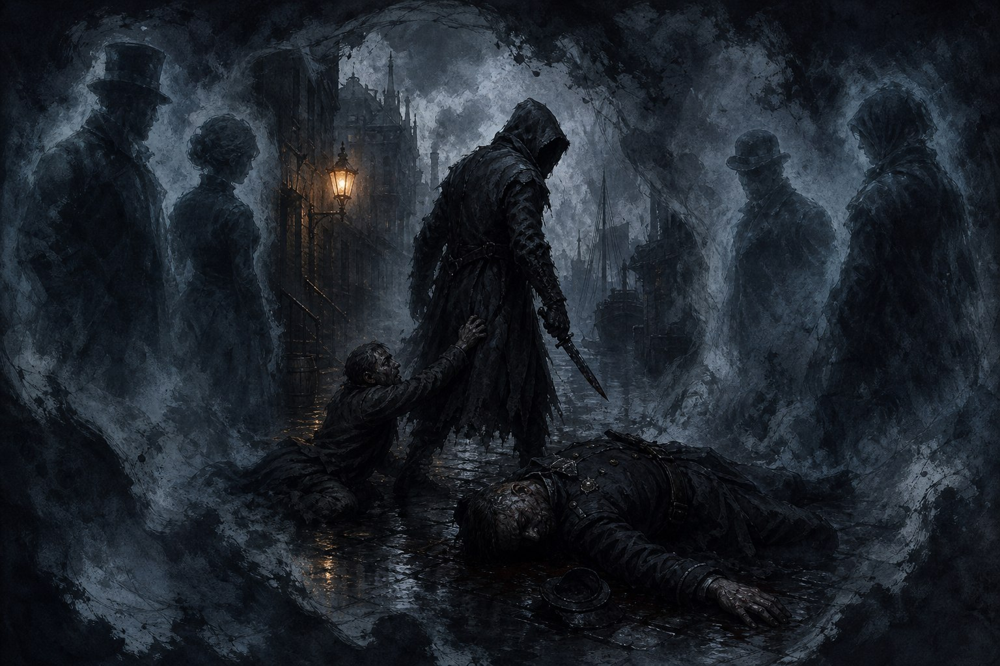
황혼전달자는 명성은 가득 찼지만 주머니는 텅 빈 채로 상토리움 대성당의 지하로 내려갔다. 감령관 살해 사건의 흔적을 쫓아 온 길이었다. 죽음감시까마귀도 색깔 까마귀도 피해 다니는 자가 있다는 것부터가 심상치 않은 사건이었고, 그 그림자는 로완 장로가 껍데기가 된 사건과 정확히 겹쳐 있었다.
지하에서 만난 던빌 지도사는 로완 장로의 자리도, 교단의 장악도 원한 적 없다고 잘라 말했다. 하지만 “저는 별다른 힘이 없는 사람입니다”라는 말이 나오는 순간, 그 말은 거짓으로 드러났다. 캐물을수록 실이 풀렸다. 3월 16일 상토리움 지하에서 펜데린 공과 만나기로 한 자리는 로완 장로 본인의 뜻으로 마련한 것이었으나, 펜데린은 끝내 나타나지 않았다. 사흘 뒤인 18일, 로완 장로는 마지막으로 멀쩡한 모습으로 대예배를 이끌며 던빌에게 “아주 잘하고 있다, 내가 없어져도 계속 잘 해달라”는 말을 남겼다. 다음 날에는 앤더슨 공이라는 자가 주선한, 던빌 홀로 참석해야 했던 강연 일정이 있었다. 던빌이 그 일정에서 돌아온 다음 날, 로완 장로는 껍데기가 되어 있었다.
던빌이 건넨 흉기에는 아직 메아리가 남아 있었다. 전달자들은 그 메아리 속으로 걸어 들어가 사건의 밤을 지켜보았다. 후드를 쓴 손이 능숙하게 칼을 놀려 감령관의 숨을 끊었다. 그것으로 끝났어야 했다. 그런데 돌아서려는 순간, 죽어가던 행인 하나가 후드 쓴 자의 발목을 붙잡고 무언가를 간절히 애원했다. 후드 쓴 자는 당황한 기색으로 손을 뿌리치려 했을 뿐, 끝내 매듭을 짓지 못하고 자리를 떴다. 깔끔하게 끝내지 못하는 그 어설픈 인정. 전달자들 중 누구도 입 밖으로 내진 않았지만, 다들 같은 이름을 떠올리고 있었다.
자유 시간 동안 얻어낸 실마리들이 하나씩 맞춰졌다. 은못용병단의 세레시는 불꽃고리회를 두고 “차라리 없애버리고 싶다”고 잘라 말하면서도, 그 본거지가 구름 위에 있다거나 땅 밑 깊은 곳에 있다는 소문만 전할 뿐 정확한 위치는 알지 못했다. 벌집 소속의 플래시뱅은 벌집이 도신평 도입에 반대하는 이유와, 도신평에 찬성하는 의원들 대부분이 어떤 식으로든 불꽃고리회와 얽혀 있다는 사실을 알려주었다. 희열교 신도 제이슨은 로완 장로의 상태가 무너지기 시작한 시점과, 던빌을 향한 상부 신도들의 기대가 부풀어 오르던 정황을 전했다. 껍데기가 된 의원의 몸에 유령을 다시 불러들이면 그 몸으로 표를 행사할 수 있다는 사실도, 불꽃고리회를 이끄는 칠인회 일곱 명 중 지금까지 확인된 건 넷뿐이라는 사실도 그렇게 드러났다. 드레이크 대부인은 암살당했고, 엘스테라 아브라시는 이루비아로 돌아갔으며, 모라 공의 행방은 묘연했다. 남은 이름은 은퇴했다가 다시 돌아왔다는 펜데린 대부인, 그 하나였다.
정면 돌파가 막히면 다른 얼굴을 빌리면 그만이었다. 시스터.S는 던빌 앞에서 급한 대로 갑옷과 투구를 뒤집어쓰고 나쁜 뜻으로 온 게 아니라고 둘러댔지만, 던빌은 두 마디도 듣지 않고 정체를 꿰뚫어 보았다. 반대로 종알이의 손끝에서는 다른 결과가 나왔다. 페스타는 사납고 마초적인 사내로, 시스터.S는 우아하게 늙은 노부인으로 완전히 다른 사람이 되어 나타났고, 그 얼굴을 마주한 세레시와 투한은 말을 잇지 못한 채 눈을 크게 떴다. 골동품 상점 사기꾼의 손에서는 분장조차 사기의 연장선이었다.
좁은 통로에서 나타난 괴생명체와의 싸움에서는 페스타가 준비한 지뢰가 빛을 발했다. 저소음 폭탄이 터지고 협공이 이어졌다. 스트레스와 상처를 짊어진 채로도 전달자들은 진실의 발자국을 놓치지 않고 쫓았다.
그리고 클루였다. 4년 전 경계참사 이후로 헤어진 동생 프리야를 찾아달라고, 불꽃고리회가 그 아이를 데리고 있을지도 모른다며 조사를 부탁하던 클루. 자신과 프리야만 아는 암호를 누군가 일러줬다고 털어놓던 클루. 손에 넣었던 검은 돌, 흡령석을 아무렇지 않게 버렸다는 말에는 “씹다버린 매미허물 같은 녀석!”이라는 욕까지 날아들었다. 그런 클루가, 자신이 그토록 캐 달라고 부탁했던 바로 그 불꽃고리회 소속이라는 사실이 드러났다. 뒤통수는 한 번이 아니라 두 번 날아든 셈이었다. 그가 찾는다던 동생도, 은못용병단에 들어간 사연도, 어디까지가 진실이고 어디부터가 미끼였는지는 아무도 알 수 없었다.
그렇게 1부가 막을 내렸다. 명성은 다음 단계로 올라서기에 충분했지만, 손에 쥔 금전은 그 문턱을 넘기에 한참 모자랐다. 황혼전달자는 텅 빈 주머니와 갈가리 찢긴 믿음을 안은 채, 불꽃고리회의 그림자 속으로 한 걸음 더 들어선 참이었다.
5화 “하지만 설득이라면 저희에게 맡겨주시는게 가장 쉬운 길일겁니다!”
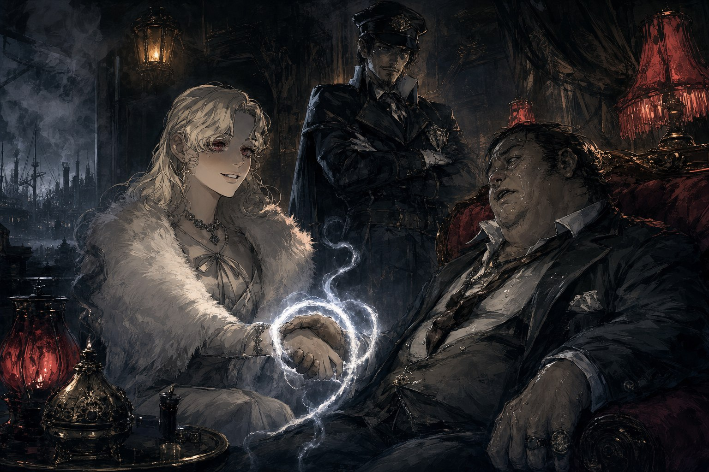
황혼의 전달자가 마침내 1등급 조직으로 올라선 그날, 도스크볼은 축하 대신 몽둥이질로 화답했다. 이름 없는 0등급 선원 둘이 골목에서 크루를 가로막았고, 방금 딴 계급장이 무색하게 크루 전체가 흠씬 두들겨 맞았다. 이 도시에서 계급은 누구도 지켜주지 않는다는 것을, 크루는 등짝으로 새로 배웠다.
한때 이들과 나란히 섰던 세이렌 상사가 다시 모습을 드러냈다. 수상쩍은 구석 하나 없이 담백하게, 그들은 도움과 의뢰를 함께 내밀었다. 곁에는 아직 앳된 얼굴의 칩스가 붙어 있었다. 유령에게 면역인 몸, 나이답지 않은 실력, 나이답지 않게 어른스러운 말투. 크루는 그런 칩스가 그저 마음에 들었다.
헤너를 접견하는 자리에서 시스터.S는 자신의 재능이 무엇을 비추는지 다시금 확인했다. 상대의 말이 참인지 거짓인지가 아니라, 상대가 지금 자신을 속이려 드는지 아닌지를 읽어내는 눈이었다. 그 눈으로 허튼을 마주하자, 흡령석 사업에 관심 있는 척하는 그의 얼굴이 온통 거짓으로 물들어 있는 것이 보였다. 진짜 속내는 딸의 꿈을 이루어주기 위해 레비아탄을 사냥하려는 데 있었다. 크루는 그 약점을 붙잡았다.
약에 취해 몽롱해진 허튼과 세인 앞에서, 종알이와 시스터.S는 말 한마디 나누지 않고도 눈빛만으로 장단을 맞췄다. 종알이는 감령관 행세로 순식간에 판을 뒤집었고, 세인은 그 눈빛 하나에 눌려 입을 다물었다. 딸의 안위를 걸고 흔드는 협박 앞에서 허튼이 흔들리자, 누군가 나직이 말했다. “하지만 설득이라면 저희에게 맡겨주시는게 가장 쉬운 길일겁니다.” 시스터.S는 그 자리에서 유령계약을 맺었다. 악수 한 번으로 성립되고, 어기는 순간 되돌릴 수 없는 대가가 따르는 계약이었다.
한편 페스타는 영체 병기 리그니 앞에서 완전히 넋을 잃었다. 분해해도 되냐 묻고, 만져보고, 붉은 경고등이 켜지는 순간까지도 물러서지 않다가 고스란히 피해를 뒤집어썼다. 지붕 위에서는 플라이가 발을 헛디뎌 2층 아래로 떨어질 뻔했으나, 시스터.S가 붙잡아 겨우 추락을 면했다. 그리고 허튼이 마지막으로 사고를 치자, 칩스가 나서서 실력을 보였다. 유령사의 재능을 지닌 허튼에게 하필 칩스를 붙여준 세이렌 상사의 선택이 우연이 아니었음을, 크루는 그제야 깨달았다.
막간의 시간, 종알이는 도박장에서 한바탕 소란을 일으켰다. 그러고는 크루 전체가 세레시와 세이렌 상사를 찾아가 조직의 성장을 위한 자금을 청했다. “먼저 대뜸 돈 빌리러 왔는데요.” 에두르지 않는 그 말에 상대는 웃었고, 선지급과 함께 갚아야 할 빚이 크루의 장부에 새로 올라갔다.
흡령석의 유통 경로를 캐던 크루는 그 뒤에 불꽃고리회가 있으리라는 확신을 굳혔다. 펜데린 대부인은 그날 이후로 자신의 저택, 식스타워즈에 발을 들이지 않고 있었고, 그 저택이야말로 불꽃고리회의 본거지를 찾는 단서라는 말이 여기저기서 들려왔다. 그리고 칩스의 입을 통해 클루의 여동생 프리야가 실존 인물임이 확인되었다. 4년 전 부두에서, 클루는 분명 프리야와 함께 어느 조직 밑에서 일하고 있었다.
그날의 끝, 한가한 동네 청년처럼 클루가 불쑥 크루 앞에 나타났다. 인사도 용건도 태연했지만, 그 태연함 뒤에 무엇을 숨기고 있는지는 아무도 알지 못했다.
6화 “어떤 기자가 그렇게 정신머리 없이 행동한담?”
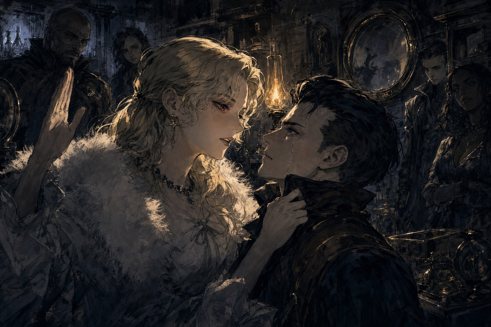
시스터.S는 더 참지 않기로 했다. 클루를 통째로 납치해서라도 답을 들어야 한다는 얘기가 오갔지만, 결국 자리에 앉힌 채 직접 캐묻는 쪽으로 정리됐다. S는 클루의 뺨을 치고, 밀어붙이고, 다시 쳤다. 칼잡이인 클루라면 힘으로는 S를 얼마든지 제압할 수 있었을 텐데도, 그는 저항 한 번 하지 않고 고스란히 맞았다. 한 번 더 손을 올리자 클루는 코앞까지 다가와 눈물이 그렁그렁한 눈으로 치라고 말했다.
거기서 클루는 그동안 삼켜온 것들을 게워냈다. 여동생 프리야를 지키고 싶었을 뿐이고, 자신은 협박을 당했을 뿐이라고 했다. 펜데린 대부인은 클루와 프리야만이 아는 암호 “제임스씨 집”을 이미 알고 있었고, 그것을 미끼로 클루를 옭아매어 은못용병단의 정보를 캐내려 했다 - 정작 클루에게는 넘겨줄 정보 같은 것도 없었지만, 그 대가로 클루는 불꽃고리회의 심부름을 해 왔다. 클루는 감령관을 살해한 것이 불꽃고리회의 문양이 새겨진 단검이었다고 말했고, 헤너 역시 그때 자신의 칼이 아니라 펜데린 대부인의 칼로 찔렀다고 실토한 적이 있다는 사실도 함께 흘러나왔다. 클루는 부두에서 자라며 어린아이들을 돌봤던 시절과, 먹고 살려 도둑질하다 푸른코트들에게 죽기 직전까지 두들겨 맞았던 일, 그런 자신을 숨겨줬다는 이유로 와기 역시 몰매를 맞았던 일까지 털어놓았다. 그리고 마지막으로, 너희는 이제 내 친구니까, 라고 말했다.
폭풍이 지나간 자리에는 어색한 온기가 남았다. 다 같이 둘러앉아 차를 마셨다. 클루는 뜨거운 찻잔을 그대로 원샷해버렸고, 종알이는 다리를 달달 떨며 자기 차례를 기다렸다. 페스타는 겸연쩍은 얼굴로 모두의 찻잔을 하나씩 우려냈고, 플라이는 자연스럽게 설탕과 우유를 넣어 마셨다. 그저 차 한 잔이었을 뿐인데, 그 잠깐의 침묵이 방금까지의 소란을 눌러 앉혔다.
그다음 움직인 곳은 앤더슨 공의 저택 주변이었다. 무뢰한들은 신문기자 행세로 접근했다. 페스타는 놀라울 만큼 그럴듯하게 기자를 연기하며 질문을 쏟아냈고, 나머지는 수첩에 저마다 딴짓을 끄적였다 - 누구는 해골을 그렸고, 누구는 “집에 가고 싶다”는 말만 되풀이해 적었다. 의심을 사려는 낌새가 보이자 플라이는 대뜸 콜만의 얼굴에 재채기를 해버렸고, S는 재빨리 손수건으로 그 얼굴을 닦아준 뒤 손수건은 미련 없이 던져버렸다.
집 안으로 들어선 뒤부터는 진짜 하이스트였다. 싸구려 자물쇠는 페스타의 손이 닿자마자 풀렸고, 1화에서 서로 부딪히기만 했던 시스터.S와도 이번에는 자연스럽게 역할을 주고받으며 손발을 맞췄다. 별생각 없이 들고 나온 찻잎이 뜻밖에도 수면 에센스를 섞어 넣을 통로가 되어, 그대로 상대를 재워버리는 데 성공했다. 저택을 뒤지는 동안 시스터.S와 종알이는 아이넬을 붙잡고 이런저런 말로 시간을 끌었고, 그 틈에 나머지가 물건을 챙겨 급하게 빠져나왔다. 마지막 순간에는 하인 하나와 잠깐의 칼부림이 벌어졌지만 무뢰한들은 무사히 저택을 빠져나왔다.
그 값은 클라라가 대신 치렀다. 펜데린 대부인의 저택 안에 있으면서도 은못용병단 쪽에 정보를 흘려 외부인을 들일 길을 터준 그녀는, 그 일로 목숨을 잃었다. 죽기 전 클라라는 앤더슨 공이 틀림없는 불꽃고리회이며, 그의 저택 안에 펜데린 대부인 저택의 지하 비밀 통로를 여는 열쇠가 있다는 사실을 넘겨주었다. 도로시라는 이름을 위해서였다는 것 말고는, 그녀가 왜 자신의 목숨을 걸면서까지 그 정보를 흘렸는지는 아무도 알지 못했다.
같은 무렵 벌집에서는 앤 워커라는 이름의 칼럼을 통해, 도신평이 순조롭게 체결되는 것을 막겠다는 뜻이 신문 지면 위로 은근히 흘러나왔다. 세레시는 무뢰한들의 의뢰 내용을 갱신했다 - 이제 황혼전달자는 정식으로 불꽃고리회를 쫓는 쪽으로 방향을 틀었다.
앤더슨 공의 저택에서 훔쳐낸 열쇠를 손에 쥔 무뢰한들은 다시 펜데린 대부인의 저택으로 향했다. 카펫을 걷어내자 그 아래 숨겨져 있던 문이 마침내 열렸다. 계단을 따라 내려간 곳에는 진짜 지하 미로가 펼쳐져 있었고, 그 어둠 속에는 이미 껍데기가 되어버린 자들이 기다리고 있었다.
7화 “어쨌든 우리가 통로를 하나 찾았군”
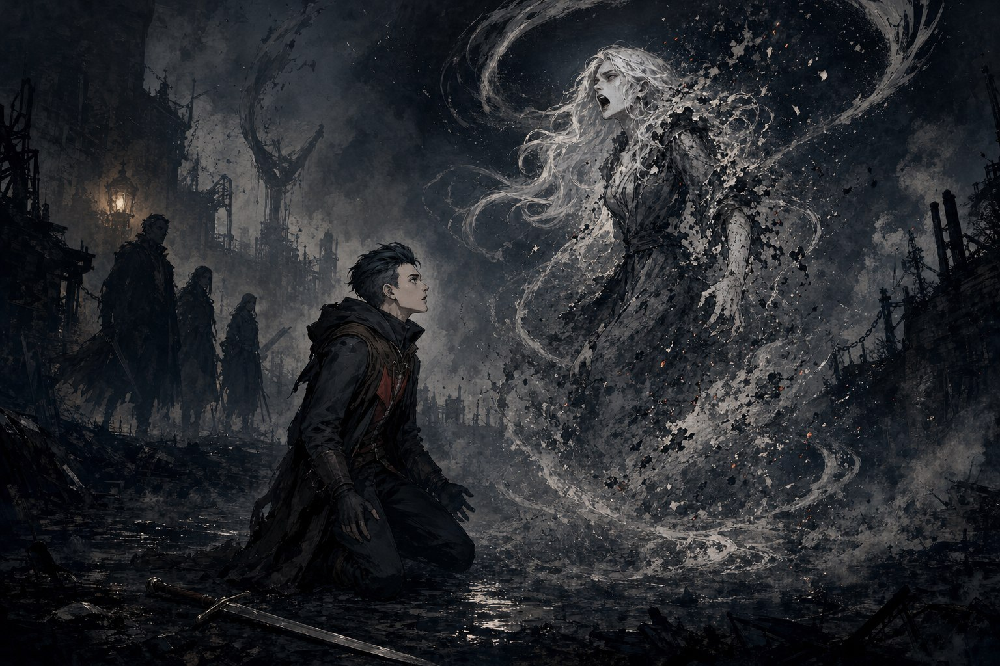
펜데린 대부인의 저택 1층, 아무도 눈여겨보지 않던 문 안쪽으로 지하도가 뚫려 있었다. 황혼의 전달자는 그 유령문을 지나 낡은 연구실로 들어섰고, 발을 들이자마자 사방에 흩어져 있던 껍데기들이 일제히 몸을 일으켰다. 눈과 입이 없는 몸뚱이들이 마치 신호를 받은 것처럼 동시에 달려들었다.
껍데기 하나가 쓰러지면 다음 껍데기가 그 자리에서 눈을 떴다. 몸을 바꿔가며 싸움을 이어가던 존재는 곧 우아하게 허리를 숙여 인사를 건넸다. 나이릭스였다. 춤을 추듯 몇 바퀴를 돌던 나이릭스는 그대로 플라이를 향해 돌진했다. “마지막 말이라도 남기시죠.” 플라이가 내뱉자 나이릭스는 정중한 말투 그대로 대답했다. “당신이 가장 날 보고 싶지 않은 때 다시 오겠습니다.” 예전에 밀크티를 나눠 마시던 사이였다는 걸 아는 사람이라면 그 정중함 밑에 얼마나 깊은 원한이 서려 있는지 짐작할 수 있었을 것이다. 플라이는 영가면 너머로 나이릭스의 모습을 황홀하게 바라보면서도, 사과할 마음은 조금도 없었다.
나이릭스를 몰아낸 뒤 지하도는 피와 내장으로 뒤덮였다. 시스터.S는 몸에 엉겨붙은 오물을 씻어내려 하수도 물에 몸을 담갔다가, 떠내려오는 시체 조각들에 기겁하며 뛰쳐나왔다. 그 시체를 터트린 장본인인 페스타는 자신이 벌인 일을 뚱하게 내려다볼 뿐이었다. 연구실 안쪽에는 흡령석에 관한 자료들이 어지럽게 널려 있었고, 이미 자아를 반쯤 빼앗긴 것처럼 보이는 낯선 노파도 있었다. 그리고 그 안쪽, 연구책임자 라펠로가 달아나는 뒷모습을 지키고 선 유령검사 델타가 일행의 앞을 막아섰다.
델타는 싸우지 않을 테니 십 분만 달라고 했다. 종알이는 그 십 분 동안 무뚝뚝한 델타에게 끊임없이 말을 걸었고, 델타는 약속한 시간이 되자마자 아무 말 없이 종알이를 힘껏 걷어차 버렸다. 라펠로는 이미 사라진 뒤였다. 일행은 통로를 조사하며 나아가다 홀로 남아 망설이는 클루를 붙잡았다. “너는 이 불안을 어떻게 하고 싶지? 잊어버릴 수도 있고 직면해서 이겨내는 수도 있지.” 종알이의 말에 클루는 다시 일행 곁으로 돌아왔다.
칠십 분에 이르는 통로를 경계하며 걸은 끝에, 일행은 도스크볼 바깥의 망실구역에 발을 디뎠다. 죽음의 땅이라 불리는 곳이었다. 그리고 그 안쪽에서 불꽃고리회가 본거지로 삼은 건물을 찾아냈다. 거인의 두 손이 다리를 움켜쥐고 금방이라도 부러트릴 듯한 형상이 문양처럼 걸려 있었고, 그들이 모여 이야기를 나누던 자리 위에는 유령의 메아리가 뱀의 똬리처럼 잔뜩 뭉쳐 있었다.
일행은 몸을 숨긴 채 펜데린 대부인과 라펠로, 그리고 또 다른 시의원 듀브린드가 나누는 대화를 엿들었다. 듀브린드는 자신이 이미 그들의 계획에서 버려질 처지라는 사실을 알지 못한 채 언성을 높이고 있었고, 라펠로는 흡령석 연구가 아직 끝나지 않았다는 말로 항의했다. 흩어진 자료 더미 속에서 한 장의 문서는 필체부터가 달랐다. 그 글을 쓴 사람이 다름 아닌 펜데린 공이라는 사실이 곧 드러났다.
메아리 속에서 클루는 재로 변한 석상 같은 형상을 보았다. 고통에 일그러진 그 얼굴은 프리야였다. 여동생의 마지막 모습 앞에서 클루는 아무 말도 잇지 못한 채 무너져 내렸다.
8화 “마음에 드는 성과를 가져오도록 하죠”
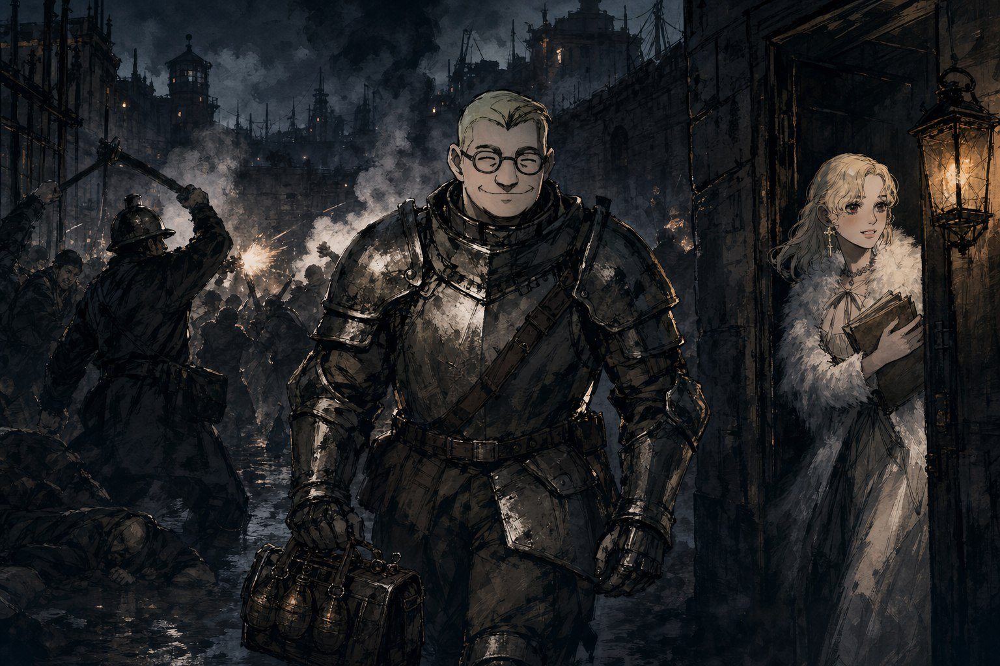
오랫동안 헤매던 불꽃고리회의 본거지, 망실구역 탐험이 마침내 끝을 보였다. 인공의 빛 한 줌 닿지 않는 어둠 속에서 무엇이 튀어나올지 알 수 없는 채로 발을 옮기던 그들 앞에서, 플라이가 불러낸 폭풍은 점점 커지다가 마침내 수많은 나비가 되어 흩어졌다. 그 광경을 뒤로하고 열린 포탈을 넘어서자, 어이없게도 그들이 도착한 곳은 펜데린 공의 방이었다. 순간 호랑이 굴에 제 발로 들어왔다는 생각에 다들 얼어붙었지만, 아래층에서 로드리게즈와 경관 세비스티앙이 태평하게 잡담을 나누는 소리가 들려오자 겨우 숨을 돌릴 수 있었다.
그 며칠 사이, 종알이의 골동품 상점에는 낯선 손님이 다녀갔다. 스스로를 로브건 베하일이라 밝힌 사내는 차와 액체를 다루는 자였다. 찻잔에 독이 들었는지 시험해 보이는가 하면, 지나가던 행인 앞에서 녹차를 터뜨리는 약을 자랑하기도 했다. 가벼운 말투와 실눈으로 웃는 낯을 하고서도 그가 남긴 인상은 짙었다. 이자가 하베일 브로건이 아니냐는 의심이 조직 안에 조용히 번졌고, 종알이는 그 뒤를 밟아 보고 싶은 충동을 억누르지 못했다.
정작 이번 건수는 단순했어야 했다. 노역소에 잠입해 듀브린드의 약점을 캐내는 일. 하지만 어둠이 짙어질 무렵 크로켓 반장과 인솔자가 나타났고, 곧이어 총성이 터지며 죄수들이 폭동을 일으켰다. 계획은 그 자리에서 산산조각 났다. 페스타는 연막탄을 던져 넣어 난전을 한층 짙은 혼란으로 몰아넣었고, 그 틈에 종알이는 페스타를 서둘러 분장시켜 듀브린드 곁에 붙여 놓았다. 국어책 읽듯 어색한 연기였지만, 의심을 사지 않는 순한 얼굴 덕에 그럭저럭 통했다. 연막 속에 숨었다 고개를 내밀었다 하는 듀브린드의 모습은 우스꽝스러우면서도 위태로웠다.
듀브린드의 경호원 알드릭은 소문 이상의 실력자였다. 몸싸움에서 몇 번이고 우위를 점하며 단검을 내던졌는데, 감각이 얼마나 예민한지 사진기를 들고 있던 조직원을 향해서까지 정확히 칼끝을 꽂아 넣었다. 그리고 그 난전 한복판으로 사일런서가 끼어들었다. 벌집 소속임을 밝힌 이 사내는 처음 나타났을 때 시스터.S의 목에 칼날부터 들이댔지만, 이번 건수의 목적이 같다는 걸 확인하자 순순히 손을 거두고 협력자가 되었다. 고분고분한 말투와 과장된 몸짓 뒤에, 슥 스쳐 지나가기만 해도 하나씩 쓰러뜨리는 잠행 솜씨를 감춘 사내였다.
혼란이 최고조에 달했을 때, 시스터.S는 몸을 낮춰 듀브린드의 사무실로 숨어들었다. 조직원들이 밖에서 총알과 폭동을 상대하는 동안, S는 서류함을 뒤져 중요한 문서를 손에 넣었다. 노역소를 빠져나올 무렵, 페스타는 어디서 구했는지 모를 갑옷을 통째로 껴입고 저벅저벅 걸어 나왔다. 그 광경을 지켜보았을 노역소 경비들이 무슨 표정을 지었을지는 아무도 알 수 없었다.
사일런서와 함께 있던 플래시뱅은 이번에도 여느 때처럼 도발적인 말투로 시스터.S를 몰아붙였다. S는 그 자리에서 플래시뱅과 유령계약을 맺기로 했다. 손해가 뻔히 보이는 거래였지만, 어떤 어려움도 우습게 여기는 자만심과 세레시를 향한 호기심, 그리고 플래시뱅에 대한 오기가 겹쳐 그 선택을 자연스럽게 만들었다. 한편 은못용병단과의 관계는 한층 두터워져, 서로 돕고 돕는 사이로 자리를 잡았다.
빼앗아 온 문서에는 흡령석을 둘러싼 듀브린드 쪽의 독자적인 연구 흔적이 담겨 있었다. 경호원 알드릭이 매일 저녁 수량을 세어 관리한다는 ‘코어 흡령석’, 그리고 라펠로가 남긴 메모 속 “유령사가 더 필요해”라는 한 줄이 특히 눈에 띄었다. 이 서류만 있으면 듀브린드의 사회적 지위를 끝장낼 수 있을 터였다. 언론에 넘기겠다는 협박 한 마디면 그를 도신평 표결에서 반대표를 던지게 만들 수도 있었다. 불꽃고리회가 망실구역 깊은 곳에서 초자연적인 존재들로부터 몸을 지킬 수 있었던 것도 정체를 알 수 없는 ‘어떤 물건’ 덕분이라는 사실이 드러났지만, 그것이 무엇인지는 여전히 안개 속이었다. 황혼전달자는 그렇게 노역소를 빠져나왔다. 머지않아 그들은 벌집의 주인, 칼리와 얼굴을 마주하게 될 참이었다.
9화 “지하에 남겨두고 오려 했던 것들 모두 널 보고 싶어해”
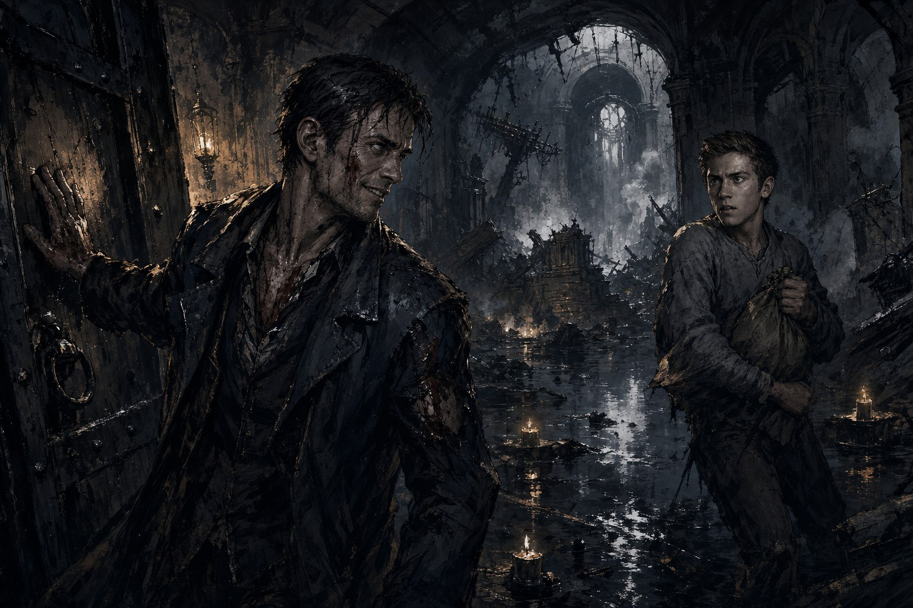
전쟁이 시작된 지 얼마 되지 않아, 황혼의 전달자는 벌써 그 대가를 치르고 있었다. 불꽃고리회와 정면으로 척을 진 이래 조직의 열기는 순식간에 치솟았고, 도스크볼 뒷골목에 나붙은 수배 벽보에는 크루의 이름이 처음으로 올랐다. 그리고 그 소란의 와중에 슬리피를 잃었다. 오랫동안 푸른코트의 검문을 대신 받아주고 안개사냥개파와의 싸움 끝에 폐허가 된 여관을 함께 버텨온 인연이, 이권 다툼 속에서 통째로 넘어가 버린 것이다. 종알이는 우연히 도박장에서 마주친 슬리피에게 짧게 안부만 전할 수 있었다. 전쟁이 끝나면 다시 찾아가겠다는 약속과 함께.
칼리 마하가 직접 보자며 사일런서 편으로 쪽지를 보내온 것은 그런 뒤숭숭한 참이었다. 자루를 뒤집어쓴 채 어딘가로 끌려간 황혼의 전달자 넷은, 눈가리개를 벗자 허공에 붕 뜬 듯한 사무실 한가운데 서 있었다. 유령의 힘으로 지은 건축물, 벌집의 은신처였다. 그 자리에는 페스타의 형 타오스도 간부의 얼굴로 앉아 있었다. 칼리는 듀브린드를 노린 암살을 막아준 일에 직접 고맙다는 말을 전했고, 벌집과 황혼의 전달자 사이에 남아 있던 앙금은 그 한 마디로 눈 녹듯 사라졌다. 물러난 삼촌 제라 마하에 대해서는 “대담하고 거친 사람이었다”는 말만 짧게 남겼고, 세레시와의 관계를 묻는 말에는 “서로에게 이득이 되는 방향을 찾아 움직이고 있을 뿐”이라는 답 이상을 내놓지 않았다.
자리를 뜨기 전, 벌집의 정보원 손톱깎이가 귀띔을 흘렸다. 오늘 밤 지하수도에서 의식이 열린다는 것이었다. 황혼의 전달자는 곧장 배를 띄워 어둠에 잠긴 물길을 거슬러 올랐다. 도중에 정체 모를 괴생명체 무리와 맞붙어 피를 흘렸고, 뭍에 배를 대자마자 불꽃고리회 쪽 인원에게 발각당했다. 앞을 가로막은 것은 또다시 델타였다. 그의 곁을 맴도는 유령 검은 누구든 다가서기만 하면 저 혼자 베어냈다. 델타는 배신한 사실을 아는 자는 모두 죽인다고 나직이 경고했지만, 정작 자신을 등지게 만든 자들에 대해서는 말을 아끼는 듯했다.
지하제단에서 마주친 윌리엄 신부는 낯선 의식을 치르는 중이었다. 그는 여느 때처럼 여유로운 낯으로 바쁘다는 핑계를 대며 자리를 피했고, 뒷일은 델타에게 미뤘다. 그림자 속에서 오래도록 신부를 쫓아온 클루가 다시 나타난 것도 이 무렵이었다. 클루는 홀로 불꽃고리회를 감시하며 참사를 막으려 애써왔지만 이미 한발 늦어 있었다. 로완의 표를 마음대로 쥐지 못하게 된 윌리엄은 오십 년 묵은 원한을 담아 로완과 던빌을 한날한시에 처리하려 했고, 그 결과 대예배당은 순식간에 아수라장이 되었다. 상관없는 신도들까지 휘말린 폭발 속에서, 살아남은 이들을 끌어내는 것조차 버거운 싸움이었다.
아수라장 한복판에서 필립이 종알이를 향해 이죽거렸다. “지하에서 죽었어야지.” 종알이는 웃었다. “하하, 지하에서?” 그리고 대꾸했다. “지하에 남겨두고 오려 했던 것들, 모두 널 보고 싶어해.” 그 한 마디에 필립의 낯빛이 굳었다. 종알이는 그날 유난히 혹독한 대가를 치렀다. 하수에 빠져 물을 삼켰고, 열리지 않는 문에 매달려 울부짖었고, 등 뒤에서 터진 폭발에 튕겨 나가떨어졌다. 시스터 S 또한 괴생명체들에게 거듭 물어뜯기며 크게 다쳤지만 끝내 버텨 냈다. 그럼에도 필립을 뒤쫓는 걸음은 멈추지 않았다.
필립은 도망치던 와중 가방을 뒤지다 스스로 심어둔 폭탄에 목숨을 잃었다. 자신이 꾸민 계략에 자신이 걸려 넘어간 셈이었다. 완강히 버티던 문 앞에서 종알이는 눈물을 훔치며 마지막 힘을 짜냈고, 문은 마침내 활짝 열렸다. 그 틈으로 델타와 클루, 나머지 조직원들이 한꺼번에 밀려 나왔다.
윌리엄 신부는 마지막 순간까지 여유를 잃지 않았다. 유령장막을 낙하산처럼 두르고는, 앞을 가로막던 자를 발로 걷어차 버리고 유유히 사라졌다. 황혼의 전달자는 분을 삭이며 지상으로 올라왔다. 폭발의 잔해와 필립의 시신을 뒤로한 채 걸어 나가는 종알이의 얼굴 위로, 째깍이는 폭탄 소리가 낮게 깔렸다.
10화 “뭘 끝내려는거죠?”
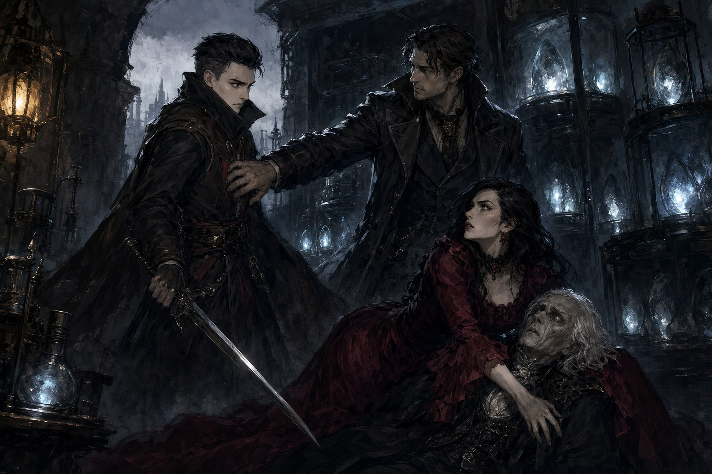
황혼전달자는 마침내 자신들의 바지선을 장만했다. 이름은 핑큐니콘 메리호. 우스운 이름이었지만, 이제 도스크볼의 뒷골목뿐 아니라 물 위로도 움직일 수 있다는 뜻이었다. 델타가 다시 그들과 어깨를 나란히 하고 싸웠고, 싸움이 끝난 뒤에는 제법 잘 싸운다며 인정하는 말을 건넸다. 한쪽에서는 조직원 하나가 완전히 짓이겨져 있었다. 종알이는 그 몰골을 보고 “믹서기에 갈린.. 아..” 라는 말 외엔 아무 말도 잇지 못했다.
그 소란 한편에서, 플라이는 악마 세타라의 초상을 마주하고 있었다. 오랜만에 보는 얼굴에 잠시 넋을 놓았을 때, 세타라가 명령을 내렸다. “일주일 안에 클루라는 청년을 죽여. 이건 명령이다.” 플라이는 애써 침착한 얼굴을 유지했지만, 그 말은 조용히 그녀 안에 눌러앉았다.
싸움이 끝난 뒤 클루는 다시 혼자 움직이겠다고 말을 꺼냈다. S가 먼저 쏘아붙였고, 클루는 참았던 말을 터뜨렸다. “실버네일즈도 날 버렸어.” 그리고 “난.. 무고한 사람이 죽는 건 더 이상 보고 싶지 않아.” “내가 소중하게 여긴 사람들은.. 다 죽었어.” 종알이는 다그치는 대신 물었다. 어떤 사람이 되고 싶은지는 클루 자신이 정할 일이라고, 그리고 “네가 소중한 것을 잃기 싫은 두려움 때문에.. 불 속으로 도망치는 거라면..” 이라고. 클루는 한참 말이 없다가 답을 냈다. “너희들과 얘기한대로.. 혼자 가기 전에 말이지.” 그는 조직에 남기로 했다.
플래시뱅과 사일런서와 합류한 황혼전달자는 종알갤러리에서 보모어와 필립 쪽으로 각자 흩어져 조사하기로 하고, 본대는 식스타워즈로 향했다. 위장된 연구실 안쪽, 열쇠로 유령문을 따고 들어선 그들은 다시 두 갈래로 나뉘었다. 종알이와 클루는 펜데린 대부인이 있는 방으로, 페스타와 시스터 S와 플라이는 북쪽 방으로. 한쪽에서는 벽이 무너지고 폭발이 일었으며, 짐승 같은 비명이 “미친놈아, 미친놈아, 미친놈아!” 하고 울렸다. 총성이 지나가고, 페스타가 완성한 새 유탄발사기가 불을 뿜었다.
펜데린 대부인의 방에서는 대부인이 의식이라기보다는 기도에 가까운 무언가를 하고 있었다. 곁에는 껍데기가 된 펜데린 공이 쓰러져 있었고, 라펠로가 함께 있었다. 종알이는 태연히 “나는 라펠로다” 라고 둘러대며 조직원들을 혼란에 빠뜨렸고, 총알이 날아드는 와중에도 클루는 고개를 틀어 그것을 피해내며 넘어지던 기세 그대로 조직원 하나를 쓰러뜨렸다. 종알이의 현혹에 걸려든 대부인은 다급하게 외쳤다. “프리야는!” 클루의 죽은 여동생의 이름이었다.
정작 마주한 라펠로는 그들이 상상했던 냉철한 연구총책임자와는 거리가 멀었다. 몰아붙이는 족족 “미친놈아!”를 외치며 겁에 질려 괴생명체 핑계를 댔다. 그리고 그 자리에서, 하베일 브로건이 섬기는 것이 다름 아닌 악마 세타라라는 사실이 드러났다.
껍데기가 된 펜데린 공 앞에서 클루는 검을 겨눴다. 지금까지 자신에게서 소중한 모든 걸 앗아간 불꽃고리회의 마지막 남은 몸뚱이였다. 종알이가 클루의 팔을 붙잡았다. “안아달라잖아.” 그리고 “프리야를 되찾을 수 있다면, 복수는 미뤄도 되지 않겠어?” 클루는 검을 늘어뜨렸다. “무저항인 사람은.. 죽이지 말라고 하더군.” 그는 펜데린 공도, 펜데린 대부인도 끝내 베지 않았다. 대신 라펠로에게는 단 한 번의 칼질로 끝을 냈다.
남은 단서를 따라 하베일 브로건이 있다는 센투랄리아 클럽으로 향했지만, 그곳에서 기다리고 있던 건 하베일 브로건이 아니라 세레시와 투한이었다. 그 순간 플래시뱅과 맺었던 유령계약이 깨지며 시스터 S의 팔에 날카로운 고통이 스쳤고, 황혼전달자들은 하나둘 붙잡혀 각자의 독방에 갇혔다. 끌려나가기 직전, 피거품을 문 클루 곁에서 투한이 열쇠 하나를 떨어뜨리고 사라졌다.
최종화 “너희를 이해시킬 마음은 없다”
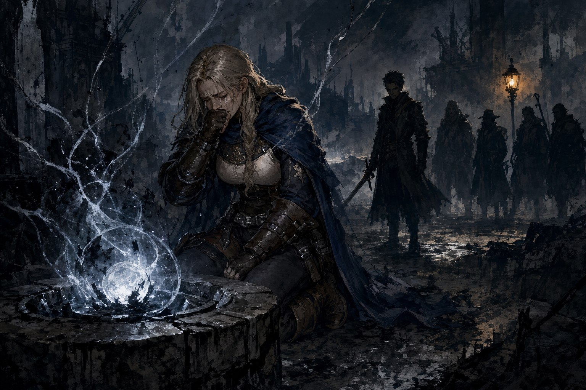
붙잡힌 황혼전달자들은 센투랄리아 감옥에 하나씩 떨어져 갇혔다. 다 같이 한방에 몰아넣지 않고 독방으로 나눈 것은 유령의 힘조차 쓸 수 없게 만든 이 감옥이 그들을 완전히 고립시키기 위한 곳이라는 뜻이었다. 클루는 철창 앞에 피를 토하며 쓰러져 있었고, 페스타가 창살 사이로 손을 뻗어 상처를 땜질했다. 기대할 수도 없던 응급처치가 기적처럼 들어맞아 클루는 눈을 떴고, 간신히 고개를 돌려 뒤쪽을 바라보며 “열…쇠”라는 한마디를 뱉었다. 그 순간 가면을 쓴 로브건 베하일이 이미 치명상을 입은 채 나타났다. 투한에게 공격받았다는 그는 클루 덕분에 목숨을 구했다며 죽기 전 열쇠를 던져주었고, 거울이 있는 방향으로 달리라는 말만 남기고 쓰러졌다. 이 이야기에는 유난히 많은 얼굴이 스쳐 지나갔지만, 끝까지 정체를 숨겼던 이 사내조차 마지막 순간에는 편을 골라 목숨을 걸었다.
열쇠를 손에 넣은 황혼전달자들은 무너지는 지하수로를 뚫고 탈출했다. 화약 냄새를 맡은 페스타가 앞장서 길을 열었고, 흡령석 파편이 하얗게 부서지는 자리마다 어둠 속의 괴생명체들을 피해 나갈 틈이 생겼다. 클루의 상처를 다시 봉합하고 서로를 방패 삼아 물살을 헤쳐 나온 끝에, 그들은 조직이 미리 준비해 둔 배에 올라탔다. 숨 돌릴 틈도 없이 델타가 벌집 총회까지 남은 시간이 두 시간뿐이라고 전했다.
극장에서는 벌집 총회가 열리고 있었고, 그 아래 폭탄이 심어져 있었다. 종알이는 즉석에서 제라 마하로 변장해 무대 위 조명을 받으며 청중을 현혹시켰다. 페스타는 객석에서 폭탄을 꺼내려는 사내를 저지했고, 무대 뒤에서는 시스터.S가 연출을 맡은 스태프를 유혹해 시간을 벌었다. 그사이 플라이는 2층에서 몰래 빠져나가는 타오스를 발견하고 홀로 뒤를 쫓았다. 각자의 역할이 동시에 맞물려 돌아가는 모습은 마치 하이스트 영화의 한 장면 같았다.
타오스를 쫓는 추격전은 지붕 위에서 시작되어 높이 솟은 거리로 이어졌다. 유령사 왜가리가 거대한 손을 만들어 타오스를 지켜내려 했고, 플라이는 메뚜기 떼가 가득한 돌풍을 날려 맞섰다. 난간 위에서 타오스를 붙잡고 몰아세우는 사이, 어디선가 나이릭스가 다시 나타났다. 종알이가 도박 빚을 없애 주겠다는 말로 겁을 주는 척했지만 타오스는 이미 독 안에 든 쥐였다. 그 자리에서 종알이가 “여기 동생분도 있으니”라고 하자 페스타는 곧바로 “누가 동생이야?” 하고 되받았다.
결국 총구를 겨눈 것은 페스타였다. 형을 죽이지 않고 옆구리에 총을 쏘아 쓰러뜨린 페스타에게 타오스는 언젠가는 죗값을 치를 것이라고 말했다. 페스타는 죗값 같은 건 없다고 답했다. 어릴 적 소설에서 이런 인물이 제일 먼저 죽는다는 걸 알았다던 페스타의 말대로, 남보다 못한 사이였던 형제는 그렇게 담백하게 갈라섰다. 더 이상의 전투는 무리라고 여긴 순간 손톱깎이와 실바람이 나타났고, 세레시를 막으러 가는 길목에서 은못용병단의 용병들과도 부딪혔다. 한계까지 몰린 플라이는 쓰러지기 직전, 나이릭스를 향한 오랜 애증을 곱씹으며 간신히 스스로를 다잡았다. 첫 등장 때처럼 우아하게 작별을 고하며 사라진 나이릭스는 황혼전달자 중 유일하게 악연과 의미 있는 결말을 맺은 상대가 되었다.
갈 수 없는 제단에서 마침내 세레시와 마주쳤다. 클루가 세레시를 어떻게 하고 싶냐고 물었을 때도 답은 정해지지 않은 채였다. 세레시는 코어 흡령석을 앞에 두고 의식을 치르고 있었고, 황혼전달자는 의식의 흐름을 실시간으로 읽어내며 개입할 틈을 쟀다. 의식을 중단시킬지 말지 선택할 수 있었지만, 벌집의 칼리에게서 모든 것을 빼앗겠다던 세레시의 말에 담긴 응집된 분노가 얼마나 큰지 가늠할 수 없어 결국 막기로 했다. 세레시는 몇 번이고 버텨내며 스스로 조각처럼 깎여 나갔고, 그 와중에도 주먹을 입에 문 채 울음을 참았다. 의식은 멈췄고 세레시는 무너졌다. 마지막으로 남긴 말은 그저 제레미가 보고 싶었다는 한마디였다.
세레시가 쓰러진 뒤, 구름 걷힌 도스크볼에 오랜만에 햇살이 내려앉았다. 클루는 허공에서 여동생 프리야의 영혼과 잠시 대화를 나누다 절벽 아래로 떨어질 뻔했고, 시스터.S가 그 손을 붙잡아 끌어올렸다. 이야기는 처음 모든 것이 시작되었던 의회 앞 장면으로 되돌아왔다. 스트랭포드 공은 이번에는 만족스러운 표결 결과를 받아들었고, 펜데린 대부인은 행복한 얼굴로 안아 달라고 말했다. 권선징악이 통하는 세계는 아니었지만, 황혼전달자는 여전히 도스크볼에 남아 각자의 길을 걸어갈 것이었다.
에필로그
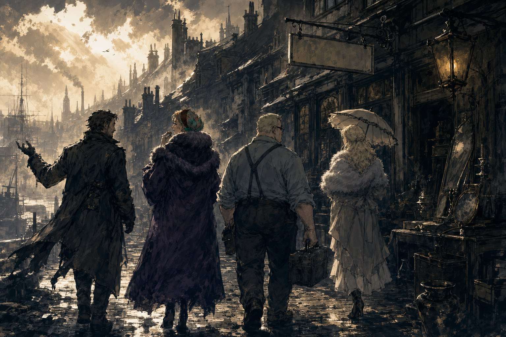
세레시가 떠난 은못용병단은 남았다. 단장의 빈자리를 누가 채울지, 그들이 세레시를 어떻게 추모할지는 아무도 몰랐지만, 투한이 대신 읽어 내려간 편지에는 클루를 용병단의 일원으로 진심으로 아꼈다는 말과, 부디 행복하게 살라는 당부가 담겨 있었다. 클루는 더 이상 누구의 심부름꾼도 아니었다. 무언가를 알아내는 데는 끝내 서툴렀던 이 청년은, 그 이름과 달리 단서가 아니라 사람들을 이끄는 길잡이였다.
시스터.S는 그 클루의 곁에 남았다. 경멸을 예의로 포장하던 손수건이 어느새 진심을 닦아주는 물건이 되어 있었고, 훗날 그 손수건의 주인이 클루에게 건넨 말은 청혼이었다고 전해진다. 페스타는 여전히 브라이트스톤의 작업실에서 폭탄을 만들고, 이따금 조직원들에게 홍차를 우려 준다. 플라이는 이제 곁에 나이릭스가 없는 채로, 여전히 낡은 털코트를 여미며 추위에 떤다. 그리고 종알이는, 종알갤러리라는 번듯한 간판이 붙은 골동품 상점에서 오늘도 가품을 진품이라 우기고 있다. 변한 것은 아무것도 없고, 그래서 그들답다.
펜데린 대부인은 살아남아 먼 곳에서 무뢰한들에게 인사를 전해 왔다. 불꽃고리회의 불씨가 완전히 꺼졌다고 믿는 사람은 아무도 없었다. 그리고 이렇게나 사랑이 가득한 이야기였지만, 마지막에 원하는 것을 전부 손에 넣은 것은 도스크볼에서 유일하게 아무도 사랑하지 않는 벌집의 칼리 마하뿐이었다.